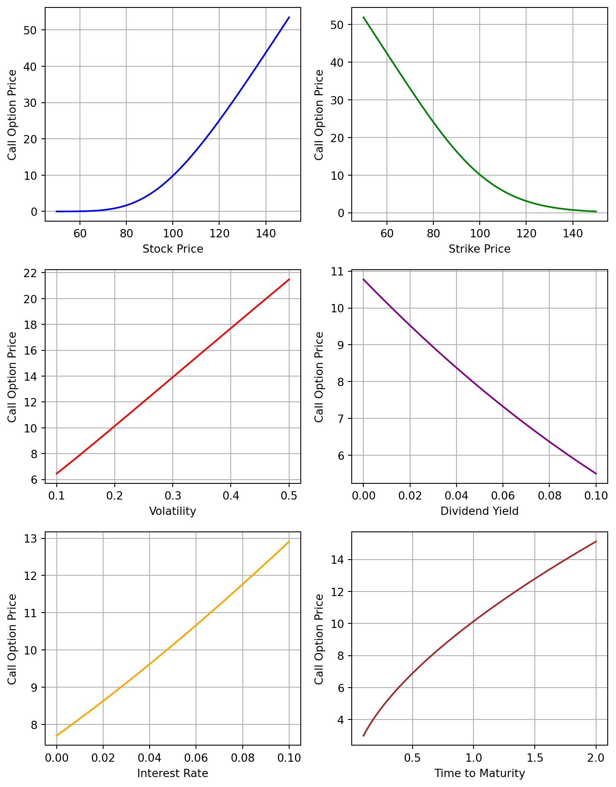

In this chapter, we will study the value of European digital and share digital options and standard European puts and calls under the Black-Scholes assumptions. We will also explain how to calculate implied volatilities and the option Greeks. The Black-Scholes assumptions are that the underlying asset pays a constant dividend yield \(q\) and has price \(S\) satisfying \[
\frac{\,\mathrm{d}S}{S} = \mu\,\,\mathrm{d}t + \sigma\,\,\mathrm{d}B
\qquad(10.1)\]
for a Brownian motion B. Here \(\sigma\) is assumed to be constant (though we will allow it to vary in a non-random way at the end of the chapter) and \(\mu\) can be a quite general random process. It is also assumed that there is a constant continuously-compounded risk-free rate \(r\).
Under these assumptions, we will complete the discussion of ?sec-s_introoptions to derive option pricing formulas. Recall that, to price a European call option, all that remains to be done is to calculate the probabilities of the option finishing in the money when we use the risk-free asset and the underlying asset as numeraires. We will do this using the results of Section 8.1. As in ?sec-s_introoptions, we will approach the pricing of call and put options by first considering their basic building blocks: digitals and share digitals.
10.1 Digital Options
A digital (or binary) option pays a fixed amount in a certain event and zero otherwise. Consider a digital that pays $1 at date \(T\) if \(S_T>K\), where \(K\) is a number that is fixed by the contract. This means that the digital pays \(x\) dollars at date \(T\) where \(x\) is defined as \[\begin{equation*}
x = \begin{cases} 1 & \text{if $S_T>K$}\; ,\\
0 & \text{otherwise}\;.
\end{cases}
\end{equation*}\] Using the risk-neutral pricing Equation 3.29, the value of the digital at date \(0\) is \(\mathrm{e}^{-rT}\\E^R[x]\). Note that \[\begin{align*}
\\E^R[x] \;&=\; 1 \times \text{prob}^R(x=1)\; + \;0 \times \text{prob}^R(x\!\!=\!\!0) \\
\;&=\; \text{prob}^R(x=1)\\
\;&=\; \text{prob}^R\big(S_T > K\big)\;.
\end{align*}\] So we need to calculate this probability of the digital finishing in the money.
In Section 8.1—see Equation 8.1—we learned that under the Black-Scholes assumption Equation 10.1 we have \[\frac{\,\mathrm{d}S}{S} =( r-q)\,\,\mathrm{d}t+\sigma\,\,\mathrm{d}B^*\; ,\] where \(B^*\) is a Brownian motion under the risk-neutral probability.1 on the volatility coefficients and on \(B\) and \(B^*\) to distinguish the Brownian motion driving \(S\) from the Brownian motion driving \(Y\) and to distinguish their volatilities are not needed here. In Chapter 7, we observed that this is equivalent to \[\,\mathrm{d}\log S = \left(r-q-\frac{1}{2}\sigma^2\right)\,\,\mathrm{d}t + \sigma\,\,\mathrm{d}B^*\; .\] Now using the formulas Equation 8.8–Equation 8.9, with \(\alpha = r-q-\sigma^2/2\), we have \(\text{prob}^R\big(S_T > K\big) = \mathrm{N}(d_2)\) where \[
d_2 = \frac{\log\left(\frac{S_0}{K}\right)+\left(r-q-\frac{1}{2}\sigma^2\right)T}{\sigma\sqrt{T}}\;.
\qquad(10.2)\]
The notation \(d_2\) is standard notation from the Black-Scholes formula, and we use it—rather than a simple \(d\)—to distinguish the number Equation 10.2 from a similar number—to be called \(d_1\) of course—that we will see in the next section.
We conclude:
Calculation Rule 10.1
The value of a digital option that pays $1 when \(S_T>K\) is \(\mathrm{e}^{-rT}\mathrm{N}(d_2)\), where \(d_2\) is defined in Equation 10.2.
Consider now a digital that pays when the underlying asset price is low; i.e., consider a security that pays \(y\) dollars at date \(T\) where \[\begin{equation*}
y = \begin{cases} 1 & \text{if $S_T<K$}\; ,\\
0 & \text{otherwise}\;.
\end{cases}
\end{equation*}\] Using risk-neutral pricing again, the value of this digital at date \(0\) is \[\mathrm{e}^{-rT}\\E^R[y] = \mathrm{e}^{-rT}\text{prob}^R(y=1) = \mathrm{e}^{-rT}\text{prob}^R\big(S_T<K\big)\; .\] From this fact and Equation 8.10, we conclude:
Calculation Rule 10.2
The value of a digital option that pays $1 when \(S_T<K\) is \(\mathrm{e}^{-rT}\mathrm{N}(-d_2)\), where \(d_2\) is defined in Equation 10.2.
10.2 Share Digitals
Consider a derivative security that pays one share of the underlying asset at date \(T\) if \(S_T>K\) and pays zero otherwise. This is called a share digital. As before, let \[\begin{equation*}
x = \begin{cases} 1 & \text{if $S_T>K$}\; ,\\
0 & \text{otherwise}\;.
\end{cases}
\end{equation*}\] Then the payoff of the share digital at date \(T\) is \(xS_T\). Let \(Y_t\) denote the value of this claim for \(0\leq t\leq T\). We have \(Y_T=xS_T\) and we want to find \(Y_0\).
From Section 7.1, we know that \(V_t=\mathrm{e}^{qt}S_t\) is the price of a non-dividend-paying portfolio. From our fundamental pricing Equation 3.28, using \(V\) as the numeraire, we have \[\begin{align*}
Y_0 &= S_0 \\E^V \left[\frac{Y_T}{\mathrm{e}^{q T}S_T}\right]\\
&=\mathrm{e}^{-q T}S_0\\E^V [x]\;.
\end{align*}\] As in the previous section, \(\\E^V[x] = \text{prob}^V\!(x=1)\), so we need to compute this probability of the option finishing in the money.
We follow the same steps as in the previous section. From Equation 8.2 we have \[
\frac{\,\mathrm{d}S}{S} = (r-q+ \sigma^2)\,\,\mathrm{d}t+\sigma\,\,\mathrm{d}B^*,
\] where now \(B^*\) denotes a Brownian motion when \(V\) is the numeraire. This is equivalent to \[
\,\mathrm{d}\log S = \left(r-q+\frac{1}{2}\sigma^2\right)\,\,\mathrm{d}t + \sigma \,\,\mathrm{d}B^*\;.
\qquad(10.3)\]
Thus, from the formulas Equation 8.8–Equation 8.9, with \(\alpha = r-q+\sigma^2/2\), we have \[\text{prob}^V\!\big(S_T>K\big) = \mathrm{N}(d_1)\; ,\] where \[
d_1 = \frac{\log\left(\frac{S_0}{K}\right)+\left(r-q+\frac{1}{2}\sigma^2\right)T}{\sigma\sqrt{T}}\;.
\qquad(10.4)\]
This implies:
Calculation Rule 10.3
The value of a share digital that pays one share when \(S_T>K\) is \(\mathrm{e}^{-q T}S_0\mathrm{N}(d_1)\), where \(d_1\) is defined in Equation 10.4.
Consider now a share digital that pays one share of the stock at date \(T\) if \(S_T<K\). Letting \[\begin{equation*}
y = \begin{cases} 1 & \text{if $S_T<K$}\; ,\\
0 & \text{otherwise}\;,
\end{cases}
\end{equation*}\] the payoff of this option is \(yS_T\). Its value at date \(0\) is \[\begin{align*}
\mathrm{e}^{-q T}S_0\\E^V [y] &= \mathrm{e}^{-q T}S_0\times\text{prob}^V\!(y=1) \\
&= \mathrm{e}^{-q T}S_0\times\text{prob}^V\!\big(S_T<K\big)\; ,
\end{align*}\] and from Equation 8.10 we have \[\text{prob}^V\!\big(S_T<K\big) = \mathrm{N}(-d_1)\; .\] We conclude:
Calculation Rule 10.4
The value of a share digital that pays one share when \(S_T<K\) is \(\mathrm{e}^{-q T}S_0\mathrm{N}(-d_1)\), where \(d_1\) is defined in Equation 10.4.
10.3 Puts and Calls
A European call option pays \(S_T-K\) at date \(T\) if \(S_T>K\) and 0 otherwise. Again letting \[\begin{equation*}
x = \begin{cases} 1 & \text{if $S_T>K$}\; ,\\
0 & \text{otherwise}\;,
\end{cases}
\end{equation*}\] the payoff of the call can be written as \(xS_T-xK\). This is equivalent to one share digital minus \(K\) digitals, with the digitals paying in the event that \(S_T>K\). The share digital is worth \(\mathrm{e}^{-q T}S_0\mathrm{N}(d_1)\) at date \(0\) and each digital is worth \(\mathrm{e}^{-rT}\mathrm{N}(d_2)\). Note that Equation 10.2 and Equation 10.4 for \(d_1\) and \(d_2\) imply \(d_2 = d_1-\sigma{\sqrt{T}}\). Therefore, combining the results of the previous two sections yields the Black-Scholes formula:
Calculation Rule 10.5
The value of a European call option at date \(0\) is \[
\mathrm{e}^{-q T}S_0\mathrm{N}(d_1)-\mathrm{e}^{-rT}K\mathrm{N}(d_2)\;,
\qquad(10.5)\]
where \(d_1\) is defined in Equation 10.4 and \(d_2 = d_1-\sigma{\sqrt{T}}\).
A European put option pays \(K-S_T\) at date \(T\) if \(S_T<K\) and 0 otherwise. As before, let \[\begin{equation*}
y = \begin{cases} 1 & \text{if $S_T<K$}\; ,\\
0 & \text{otherwise}\;.
\end{cases}
\end{equation*}\] The payoff of the put option is \(yK-yS_T\). This is equivalent to \(K\) digitals minus one share digital, all of the digitals paying when \(S_T<K\). Thus, we have:
Calculation Rule 10.6
The value of a European put option at date \(0\) is \[
\mathrm{e}^{-rT}K\mathrm{N}(-d_2)-\mathrm{e}^{-q T}S_0\mathrm{N}(-d_1)\;,
\qquad(10.6)\]
where \(d_1\) is defined in Equation 10.4 and \(d_2 = d_1-\sigma{\sqrt{T}}\).
Again, this is the Black-Scholes formula.
The values of the European put and call satisfy put-call parity, and we can also find one from the other by^[The put-call parity relation follows from the fact that both the left and the right-hand sides are the prices of portfolios that have value \(\max(S_T,K)\) at the maturity of the option. To see this for the left-hand side, note that \(\mathrm{e}^{-rT}K\) is sufficient cash to accumulate to \(K\) at date \(T\), allowing exercise of the call when it is in the money and retention of the cash \(K\) otherwise. For the right-hand side, note that \(\mathrm{e}^{-q T}S_0\) is enough cash to buy \(\mathrm{e}^{-q T}\) shares of the stock at date \(0\) which, with reinvestment of dividends, will accumulate to one share at date \(T\), enabling exercise of the put if it is in the money or retention of the share otherwise.} \[
\mathrm{e}^{-rT}K + \text{Call Price} = \mathrm{e}^{-q T}S_0+ \text{Put Price}\;.
\qquad(10.7)\]
10.4 Monte-Carlo Approximation of Black-Scholes
10.5 Binomial Approximation of Black-Scholes
10.6 Implied Volatilities
All of the inputs into the option pricing formulas are in theory observable, except for the volatility coefficient \(\sigma\). We can estimate \(\sigma\) from historical data (see Chapter 18), or estimate it from the prices of other options. The latter method exploits the fact that there is a one-to-one relationship between the price given by the Black-Scholes formula and the \(\sigma\) that is input, so one can take the price as given and infer \(\sigma\) from the formula. The \(\sigma\) computed in this way is called the implied volatility. The implied volatility from one option can be used to price another (perhaps non-traded or less actively traded) option.
Even if we acknowledge that the model is not correct, the computation of implied volatilities is still useful for characterizing market prices, because we can quickly describe an option as expensive or cheap depending on whether its implied volatility is large or small. Somewhat paradoxically, it is less easy to see if an option is expensive or cheap by looking at its price, because one must consider the price in the context of the exercise price and maturity. To some extent, the implied volatility normalizes the price relative to the exercise price and maturity. Of course, it does not always pay to sell expensive options or buy cheap options, unless they are expensive or cheap relative to an accurate model!
10.7 Term Structure of Volatility
The option pricing formulas in this chapter are derived from the fact that the natural logarithm of the stock price at maturity is normally distributed with a certain mean (depending on the numeraire) and variance equal to \(\sigma^2T\). It is not actually necessary that the volatility be constant. The formulas are still valid if \[\frac{\,\mathrm{d}S_t}{S_t}= \mu_t\,\,\mathrm{d}t + \sigma_t\,\,\mathrm{d}B_t\] where \(\sigma_t\) is some non-random function of time (and again \(\mu\) can be a quite general random process). In this case, the variance of \(\log S_T\) will be \[
\int_0^T \sigma^2_t\,\,\mathrm{d}t\;,
\qquad(10.8)\]
which is essentially the sum of the instantaneous variances \(\sigma^2_t\,\,\mathrm{d}t\). In the \(d_1\)’s and \(d_2\)’s in the option pricing formulas, \(\sigma^2T\) should be replaced by Equation 10.8. A convenient way of expressing this is as follows. Let \(\sigma_{\text{avg}}\) be the positive number such that \[
\sigma_{\text{avg}}^2 = \frac{1}{T}\int_0^T \sigma^2_t\,\,\mathrm{d}t\;.
\qquad(10.9)\]
Then we simply need to input \(\sigma_{\text{avg}}\) as in our option pricing functions. We will call \(\sigma_{\text{avg}}\) the average volatility, though note that it is not really the average of \(\sigma_t\) but instead is the square root of the average of \(\sigma^2_t\).
It is important to recognize that, throughout this chapter, date \(0\) means the date at which the option is being valued. It is not necessarily the date at which the option was first bought or sold. So \(\sigma_{\text{avg}}\) is the average (in a sense) volatility during the remaining lifetime of the option, which need not be the same as the average during the option’s entire lifetime. It is this remaining volatility that is important for pricing and hedging. Moreover, it is a mistake at date \(0\) to use \(\sigma_0\) as the volatility to compute prices and hedges. Instead, prices and hedges should be based on \(\sigma_{\text{avg}}\).
These considerations provide a way to address the following situation. If we compute implied volatilities for options with different maturities, we will normally get different numbers. For example, consider two at-the-money options with maturities \(T_1\) and \(T_2\) where \(T_2>T_1\). Denote the implied volatilities by \(\hat{\sigma}_1\) and \(\hat{\sigma}_2\). We want to interpret these as average volatilities for the time periods \([0,T_1]\) and \([0,T_2]\) respectively. This requires the existence of a function \(\sigma_t\) such that \[\hat{\sigma}_1^2 = \frac{1}{T_1}\int_0^{T_1} \sigma^2_t\,\,\mathrm{d}t \quad \text{and} \quad \hat{\sigma}_2^2 = \frac{1}{T_2}\int_0^{T_2} \sigma^2_t\,\,\mathrm{d}t\; .\] This would imply \[\hat{\sigma}_2^2T_2 - \hat{\sigma}_1^2T_1 = \int_{T_1}^{T_2} \sigma^2_t\,\,\mathrm{d}t\; ,\] which requires \[\hat{\sigma}_2^2T_2 - \hat{\sigma}_1^2T_1 \geq 0\; .\] Equivalently, \[\hat{\sigma}_2 \geq \sqrt{\frac{T_1}{T_2}} \hat{\sigma}_1\; .\] Provided this last inequality is satisfied, we can easily construct the function \(\sigma_t\) as \[\sigma_t = \begin{cases} \hat{\sigma}_1 & \quad\text{for $t\leq T_1$} \\
\sqrt{\frac{\hat{\sigma}_2^2T_2 - \hat{\sigma}_1^2T_1}{T_2-T_1}} &\quad\text{for $T_1 < t\leq T_2$}.
\end{cases}
\] More generally, given a sequence of at-the-money options with maturities \(T_1<T_2<\cdots T_N\) and implied volatilities \(\hat{\sigma}_1,\dots,\hat{\sigma}_N\), we define \[\sigma_t = \sqrt{\frac{\hat{\sigma}_{i+1}^2T_{i+1} - \hat{\sigma}_i^2T_i}{T_{i+1}-T_i}}\] for \(T_i<t\leq T_{i+1}\), provided the expression inside the square root symbol is positive. This \(\sigma_t\) is often called the term structure of (implied) volatilities. Generally, we may expect \(\sigma_t\) to be a decreasing function of time \(t\) when the current market is especially volatile and to be an increasing function when the current market is especially quiet.
10.8 Smiles and Smirks
If we compute implied volatilities for options with the same maturity but different strikes, we will again obtain different implied volatilities for different options. If we plot implied volatility against the strike, the pattern one normally sees for equities and equity indices is the implied volatility declining as the strike increases until the strike is somewhere near the current value of the underlying (so the option is at the money). The implied volatility will then generally flatten out or increase slightly at higher strikes. The graph looks like a twisted smile (smirk). This pattern has been very pronounced in equity index option prices since the crash of 1987. In contrast to the term structure of implied volatilities, this moneyness structure of implied volatilities is simply inconsistent with the model. It suggests that the risk-neutral return distribution is not lognormal but instead exhibits a higher likelihood of extreme returns than the lognormal distribution (i.e., it has fat tails) with the likelihood of extreme negative returns being higher than the likelihood of extreme positive returns (i.e., it is skewed). We will return to this subject in Section 19.1.
10.9 Calculations in Python
The following calculates the Black Scholes call, put, call delta, call gamma, and implied volatility.
Code
import numpy as npfrom scipy.stats import normimport scipy.optimize as optimizedef black_scholes_call(S, K, r, sigma, q, T):""" Inputs: S = initial stock price K = strike price r = risk-free rate sigma = volatility q = dividend yield T = time to maturity """if sigma ==0:returnmax(0, np.exp(-q * T) * S - np.exp(-r * T) * K)else: d1 = (np.log(S / K) + (r - q +0.5* sigma **2) * T) / (sigma * np.sqrt(T)) d2 = d1 - sigma * np.sqrt(T) N1 = norm.cdf(d1) N2 = norm.cdf(d2)return np.exp(-q * T) * S * N1 - np.exp(-r * T) * K * N2def black_scholes_put(S, K, r, sigma, q, T):""" Inputs: S = initial stock price K = strike price r = risk-free rate sigma = volatility q = dividend yield T = time to maturity """if sigma ==0:returnmax(0, np.exp(-r * T) * K - np.exp(-q * T) * S)else: d1 = (np.log(S / K) + (r - q +0.5* sigma **2) * T) / (sigma * np.sqrt(T)) d2 = d1 - sigma * np.sqrt(T) N1 = norm.cdf(-d1) N2 = norm.cdf(-d2)return np.exp(-r * T) * K * N2 - np.exp(-q * T) * S * N1def black_scholes_call_delta(S, K, r, sigma, q, T):""" Inputs: S = initial stock price K = strike price r = risk-free rate sigma = volatility q = dividend yield T = time to maturity """ d1 = (np.log(S / K) + (r - q +0.5* sigma **2) * T) / (sigma * np.sqrt(T))return np.exp(-q * T) * norm.cdf(d1)def black_scholes_call_gamma(S, K, r, sigma, q, T):""" Inputs: S = initial stock price K = strike price r = risk-free rate sigma = volatility q = dividend yield T = time to maturity """ d1 = (np.log(S / K) + (r - q +0.5* sigma **2) * T) / (sigma * np.sqrt(T)) nd1 = np.exp(-d1 **2/2) / np.sqrt(2* np.pi)return np.exp(-q * T) * nd1 / (S * sigma * np.sqrt(T))def black_scholes_call_implied_vol(S, K, r, q, T, CallPrice):""" Inputs: S = initial stock price K = strike price r = risk-free rate q = dividend yield T = time to maturity CallPrice = call price """def objective(sigma):return black_scholes_call(S, K, r, sigma, q, T) - CallPriceif CallPrice < np.exp(-q * T) * S - np.exp(-r * T) * K:raiseValueError("Option price violates the arbitrage bound.") tol =1e-6 lower =0 upper =1 fupper = objective(upper)while fupper <0: upper *=2 fupper = objective(upper) implied_vol = optimize.bisect(objective, lower, upper, xtol=tol)return implied_vol# Example usage (you can replace these with input values)S =100# Initial stock priceK =100# Strike pricer =0.05# Risk-free ratesigma =0.2# Volatilityq =0.02# Dividend yieldT =1# Time to maturity in yearsCallPrice =10# Call price for implied volatility calculation# Calculate Black-Scholes call and put pricescall_price = black_scholes_call(S, K, r, sigma, q, T)put_price = black_scholes_put(S, K, r, sigma, q, T)print(f"Call Price: {call_price}, Put Price: {put_price}")# Calculate Delta and Gamma for the call optioncall_delta = black_scholes_call_delta(S, K, r, sigma, q, T)call_gamma = black_scholes_call_gamma(S, K, r, sigma, q, T)print(f"Call Delta: {call_delta}, Call Gamma: {call_gamma}")# Calculate implied volatility for a given call priceimplied_vol = black_scholes_call_implied_vol(S, K, r, q, T, CallPrice)print(f"Implied Volatility: {implied_vol}")
The following plot the Black Scholes call price against the stock price, the strike price, volatility, dividend yield, interest rate, and time to maturity.
Code
import numpy as npimport matplotlib.pyplot as pltfrom scipy.stats import normblack_scholes_call(S, K, r, sigma, q, T)# ParametersS = np.linspace(50, 150, 100)K =100T =1r =0.05sigma =0.2q =0.01# Plot Black-Scholes call price against various parametersfig, axs = plt.subplots(3, 2, figsize=(8, 10))# Plot against stock pricecall_prices_S = [black_scholes_call(s, K, r, sigma, q, T) for s in S]axs[0, 0].plot(S, call_prices_S, label='Call Option Price', color='blue')axs[0, 0].set_title('')axs[0, 0].set_xlabel('Stock Price')axs[0, 0].set_ylabel('Call Option Price')axs[0, 0].grid(True)# Plot against strike pricestrike_prices = np.linspace(50, 150, 100)call_prices_K = [black_scholes_call(S[50],k, r, sigma, q, T) for k in strike_prices]axs[0, 1].plot(strike_prices, call_prices_K, label='Call Option Price', color='green')axs[0, 1].set_title('')axs[0, 1].set_xlabel('Strike Price')axs[0, 1].set_ylabel('Call Option Price')axs[0, 1].grid(True)# Plot against volatilityvolatilities = np.linspace(0.1, 0.5, 100)call_prices_sigma = [black_scholes_call(S[50],K, r, sigma, q, T) for sigma in volatilities]axs[1, 0].plot(volatilities, call_prices_sigma, label='Call Option Price', color='red')axs[1, 0].set_title('')axs[1, 0].set_xlabel('Volatility')axs[1, 0].set_ylabel('Call Option Price')axs[1, 0].grid(True)# Plot against dividend yielddividend_yields = np.linspace(0, 0.1, 100)call_prices_q = [black_scholes_call(S[50],K, r, sigma, q, T) for q in dividend_yields]axs[1, 1].plot(dividend_yields, call_prices_q, label='Call Option Price', color='purple')axs[1, 1].set_title('')axs[1, 1].set_xlabel('Dividend Yield')axs[1, 1].set_ylabel('Call Option Price')axs[1, 1].grid(True)# Plot against interest rateinterest_rates = np.linspace(0, 0.1, 100)call_prices_r = [black_scholes_call(S[50],K, r, sigma, q, T) for r in interest_rates]axs[2, 0].plot(interest_rates, call_prices_r, label='Call Option Price', color='orange')axs[2, 0].set_title('')axs[2, 0].set_xlabel('Interest Rate')axs[2, 0].set_ylabel('Call Option Price')axs[2, 0].grid(True)# Plot against time to maturitytimes_to_maturity = np.linspace(0.1, 2, 100)call_prices_T = [black_scholes_call(S[50],K, r, sigma, q, T) for T in times_to_maturity]axs[2, 1].plot(times_to_maturity, call_prices_T, label='Call Option Price', color='brown')axs[2, 1].set_title('')axs[2, 1].set_xlabel('Time to Maturity')axs[2, 1].set_ylabel('Call Option Price')axs[2, 1].grid(True)plt.tight_layout()plt.show()
To see how the Greeks respond to changes in the various inputs to the Black-Scholes formula (e.g., interest rate (\(r\)), time to maturity (\(T\)) and volatility (\(\sigma\))), we encourage readers to interact with the plot below.
Figure 10.1: Sensitivity of the Greeks
10.10 Example: Replicating Portfolios and Simulating Portfolio Insurance
Another derivation of the Black Scholes formula is provided by Merton. He asked the question whether by trading the stock and the risk free asset whether the payoff to a European call option can be replicated. Let \(\theta_t\) be the number of shares of the stock held at time \(t\) and \(\alpha_t\) the number of shares of an initial investment of one dollar in the risk free asset. Then the portfolio is worth \(\alpha_t R_t + \theta_t S_t\) where \(R_t= e^{rt}\) is the time \(t\) value of an initial time \(0\) investment of one dollar in the risk free asset. The portfolio should start with an initial value, should not have any cash inflows or outflows and have a terminal value equal to a call payoff so the changes in value are completely dictated by the changes in the value of the assets. That is, assuming continuous trading, \[ d W_t = \theta_t d S_t + \alpha_t d R_t = \theta_t \left(\mu S_t dt + q S_t dt + \sigma S_t d B_t\right) + \alpha_t r R_t dt\] with terminal condition \[ W_T = \alpha_T R_T + \theta_T S_T = (S_T - K)^{+} \] The problem is to find \(\theta_t\) and \(\alpha_t\) for all times and states. If we can accomplish this, then by `no-arbitrage’ the call price must be the value of the initial investment. Assume the call price is a function of the stock price and time: \(C(t,S_t)\). Then by Ito’s Lemma \[ d C(t,S_t) = \left(\frac{\partial C}{\partial t} + \frac{\partial C}{\partial S} (\mu-q) S_t + \frac{1}{2} \frac{\partial^2 C}{\partial S^2} \sigma^2 S_t^2 \right) dt + \frac{\partial C}{\partial S} \sigma S_t dB_t \] It should be apparent that we want to hold \(\theta = \frac{\partial C}{\partial S}\), which is the delta of the call option. By doing so, we match the diffusion term in thw change in wealth and the change in the call option. Then matching the drift terms in both expressions \[ \frac{\partial C}{\partial S} \mu S_t + \alpha_t r R_t = \frac{\partial C}{\partial t} + \frac{\partial C}{\partial S} (\mu-q) S_t + \frac{1}{2} \frac{\partial^2 C}{\partial S^2} \sigma^2 S_t^2\] which can be solved to give \[ \alpha_t r R_t=r \left(W_t -\frac{\partial C}{\partial S} S_t\right) = \frac{\partial C}{\partial t}-\frac{\partial C}{\partial S} q S_t + \frac{1}{2} \frac{\partial^2 C}{\partial S^2} \sigma^2 S_t^2\] which gives the equation \[r W_t = \frac{\partial C}{\partial t} + \frac{\partial C}{\partial S}(r-q) S_t+\frac{1}{2} \frac{\partial^2 C}{\partial S^2} \sigma^2 S_t^2\] with a boundary condition \(W_T = (S_T-K)^{+}\). However, no-arbitrage suggests \(W_t = C(t,S_t)\) which gives us the partial differential equation \[r C = \frac{\partial C}{\partial t} + \frac{\partial C}{\partial S} (r-q) S+\frac{1}{2} \frac{\partial^2 C}{\partial S^2} \sigma^2 S^2\] with a boundary condition \(C(T,S_T)= (S_T - K)^{+}\). This is a partial differential equation and a fairly tedious set of calcuations show the Black Scholes formula is a solution (in fact it is the only positive solution). Close observation of the right hand side we see this is the drift term of Ito expansion for \(C\) if we work in the risk-neutral probability. The right hand side then says in the risk-neutral probability, the call option earns the risk free return.
However, there is nothing special about a call option. The same argument will apply for any European style option. The only difference is the boundary condition. This procedure allows us to replicate the payoff of any European option even for those which might not be traded. This observation had a profound effect on practice. A particularly popular example is portfolio insurance.
Recall, that a protective put position buys a put and buys a share and the payoff at the expiration of the put is given by \(\max(K,S_T)\). The reason for the name protective put is apparent since the position can pay off no less than \(K\). The cost of this insurance is the price of the put. However, if the put is not traded, we can synthetically replicate this payoff using the prodedure above assuming we can trade continuously. The basic recipe is to start with inital wealth equal to that for a protective put position: \(W_0 = P(0,S_0)+S_0\). The delta of the protective put position can be calcuated to be the delta of the put plus 1 which is \(N(d_1)\), where \(d_1\) is calculated at each point in time. However, in practice we cannot trade continuously. A simple discrete strategy would rebalance at intervals \(\Delta t\). The strategy calculates \(N(d_1)\) at time 0 and holds \(P(0,S_0)+S_0 - N(d_1)S_0\) dollars in the risk free asset and \(N(d_1)\) shares of the asset. Thereafter these holdings are adjusted. The change in portfolio value over the interval \(\Delta t\) is \[\Delta W= W_{i \Delta t}- W_{(i-1)\Delta t} \]\[
= (P((i-1)\Delta t,S_{(i-1)\Delta t})+S_{(i-1)\Delta t} - N(d_1-)S_{(i-1)\Delta t})(R_{i\Delta t}-R_{(i-1)\Delta t}) + N(d1-)(S_{i\Delta t}-S_{(i-1)\Delta t})
\] where \(N(d1-)\) is the delta chosen at time \((i-1)\Delta t\). The question is if the Black Scoles model is correct, how accurate can a discrete rebalancing scheme be? This is simulated in the following code:
Code
import numpy as np# from bsfunctions import *import matplotlib.pyplot as pltimport timefrom math importpow, exp, sqrtfrom scipy import stats# incs = np.genfromtxt('incs.csv',delimiter=",",skip_header=1)def blackscholes(S0, K, r, q, sig, T, call =True):'''Calculate option price using B-S formula. Args: S0 (num): initial price of underlying asset. K (num): strick price. r (num): risk free rate. q (num): dividend yield sig (num): Black-Scholes volatility. T (num): maturity. call (bool): True returns call price, False returns put price. Returns: num ''' d1 = (np.log(S0/K) + (r -q + sig**2/2) * T)/(sig*np.sqrt(T)) d2 = d1 - sig*np.sqrt(T)# norm = sp.stats.norm norm = stats.normif call:return np.exp(-q*T)*S0 * norm.cdf(d1,0,1) - K * np.exp(-r * T) * norm.cdf(d2,0, 1)else:return np.exp(-q*T)*S0 *-norm.cdf(-d1,0,1) + K * np.exp(-r * T) * norm.cdf(-d2,0, 1)def blackscholes_delta(S0, K, r, q, sig, T, call =True):'''Calculate option price using B-S formula. Args: S0 (num): initial price of underlying asset. K (num): strick price. r (num): risk free rate. q (num): dividend yield sig (num): Black-Scholes volatility. T (num): maturity. call (bool): True returns call price, False returns put price. Returns: num ''' d1 = (np.log(S0/K) + (r -q + sig**2/2) * T)/(sig*np.sqrt(T)) d2 = d1 - sig*np.sqrt(T)# norm = sp.stats.norm norm = stats.normiftype(call) ==bool:if call:return np.exp(-q*T)*norm.cdf(d1,0,1)else:return np.exp(-q*T)*norm.cdf(-d1,0,1)else:print("Not a valid value for call")# parameters# number of paths# n = incs.shape[1]n =100000# number of divisions# m = incs.shape[0]m =100# interest rater =.1# dividend yieldq=0.0# true driftmu =.15# volatilitysig =.2# Initial Stock PriceS0 =42# Strike PriceK =42# MaturityT =0.5# seed for random generatorseed=1234# define a random generatorrg = np.random.RandomState(seed)# initialize# generate normal random vairablesdt= T/mvol=sig*np.sqrt(dt)incs = rg.normal(0,vol,[m,n])tline = np.linspace(0,T,m+1)St = np.zeros((m+1,n))#St1 = np.zeros((m+1,n))V_vec = np.zeros((m+1,n))delta = np.zeros((m,n))put= blackscholes(S0,K,r, q, sig,T,call=False)incs_cumsum = np.concatenate((np.zeros((1,n)),incs),axis=0).cumsum(axis=0)V_vec = np.zeros((m+1,n))t_mat = np.repeat(tline.reshape((m+1,1)), n, axis=1)drift_cumsum = (mu -q -0.5*sig**2) * t_matSt = S0 * np.exp(incs_cumsum + drift_cumsum)delta = blackscholes_delta(St[:-1,:],K,r, q, sig,T-t_mat[:-1,:])V_vec[0,:] = S0 + putfor i inrange(1,m+1): V_vec[i,:] = V_vec[i-1,:] + (np.exp(r*dt)-1) * (V_vec[i-1,:] - delta[i-1,:] * St[i-1,:])+ delta[i-1,:] * (St[i,:]-St[i-1,:])# Uses actual simulated changes in riskfree and stock price not the dt and dB approximations # plot ST versus VTplt.scatter(St[m,:],V_vec[m,:])plt.xlabel('Stock Price at Maturity')plt.ylabel('Value of Portfolio Insurance')plt.show()

With \(m=100\) rebalancing dates over \(T=0.5\) for the parameters chosen the repliacting strategy does a pretty good job. The hedging errors occur when the stock price is close to the strike price. This is not surprising since the delta changes (measured by the gamma) fastest around this point. A gamma hedge would potentially improve the performance.
The portfolio insurance rebalancing scheme involves sell stock and buying bonds when the stock price goes down and buying stocks and selling bonds when the stock price goes up. This can be destabilizing and was identified as a contributor to the 1987 stock market crash.
Discretely-Rebalanced Delta Hedges
To compute the real-world distribution of gains and losses from a discretely-rebalanced delta hedge, we input the expected rate of return \(\mu\). We consider adjusting the hedge at dates \(0=t_0<t_1<\cdots<t_N=T\), with \(t_i-t_{i-1}=\Delta t = T/N\) for each \(i\). The changes in the natural logarithm of the stock price between successive dates \(t_{i-1}\) and \(t_i\) are simulated as \[\Delta \log S = \left(\mu-q-\frac{1}{2}\sigma^2\right)\,\Delta t + \sigma\,\Delta B\; ,\] where \(\Delta B\) is normally distributed with mean zero and variance \(\Delta t\). The random variables \(\Delta B\) are simulated as standard normals multiplied by \(\sqrt{\Delta t}\). We begin with the portfolio that is short a call, long \(\delta\) shares of the underlying, and short \(\delta S-C\) in cash. After the stock price changes, say from \(S\) to \(S'\), we compute the new delta \(\delta'\). The cash flow from adjusting the hedge is \((\delta-\delta')S'\). Accumulation (or payment) of interest on the cash position is captured by the factor \(e^{r\Delta t}\). Continuous payment of dividends is modelled similarly: the dividends earned during the period \(\Delta t\) is taken to be \(\delta S\left(e^{q\Delta t}-1\right)\). The cash position is adjusted due to interest, dividends, and the cash flow from adjusting the hedge. At date \(T\), the value of the portfolio is the cash position less the intrinsic value of the option.
To describe the distribution of gains and losses, we compute percentiles of the distribution. You should see that the hedge becomes more nearly perfect as the number of periods \(N\) is increased. Note that this is true regardless of the \(\mu\) that is input, which reaffirms the point that option values and hedges do not depend on the expected rate of return of the underlying. The percentile is calculated with the Python program.2
Code
import numpy as npfrom scipy.stats import normimport scipy.optimize as optimizedef simulated_delta_hedge_profit(S0, K, r, sigma, q, T, mu, M, N, pct):""" Inputs: S0 = initial stock price K = strike price r = risk-free rate sigma = volatility q = dividend yield T = time to maturity mu = expected rate of return N = number of time periods M = number of simulations pct = percentile to be returned """ dt = T / N SigSqrdt = sigma * np.sqrt(dt) drift = (mu - q -0.5* sigma **2) * dt Comp = np.exp(r * dt) Div = np.exp(q * dt) -1 LogS0 = np.log(S0) Call0 = black_scholes_call(S0, K, r, sigma, q, T) Delta0 = black_scholes_call_delta(S0, K, r, sigma, q, T) Cash0 = Call0 - Delta0 * S0 Profit = np.zeros(M)for i inrange(M): LogS = LogS0 Cash = Cash0 S = S0 Delta = Delta0for j inrange(1, N): LogS += drift + SigSqrdt * np.random.randn() NewS = np.exp(LogS) NewDelta = black_scholes_call_delta(NewS, K, r, sigma, q, T - j * dt) Cash = Comp * Cash + Delta * S * Div - (NewDelta - Delta) * NewS S = NewS Delta = NewDelta LogS += drift + SigSqrdt * np.random.randn() NewS = np.exp(LogS) HedgeValue = Comp * Cash + Delta * S * Div + Delta * NewS Profit[i] = HedgeValue -max(NewS - K, 0)return np.percentile(Profit, pct *100)# Example usage (you can replace these with input values)S =100# Initial stock priceK =100# Strike pricer =0.05# Risk-free ratesigma =0.2# Volatilityq =0.02# Dividend yieldT =1# Time to maturity in yearsCallPrice =10# Call price for implied volatility calculation# Simulate delta hedging profitS0 =100# Initial stock pricemu =0.1# Expected rate of returnM =1000# Number of simulationsN =252# Number of time periodspct =0.95# Percentile to be returneddelta_hedge_profit = simulated_delta_hedge_profit(S0, K, r, sigma, q, T, mu, M, N, pct)print(f"Delta Hedge Profit (95th percentile): {delta_hedge_profit}")
Exercise 10.1 Create a Python code which inputs \(K\), \(r\), \(\sigma\), \(q\) and \(T\). Compute the delta of a call option for stock prices \(S = .01K\), \(.02K\), , \(1.99K\), \(2K\) (i.e., \(S = iK/100\) for \(i=1, \ldots 200\)) and plot the delta against the stock price.
Exercise 10.1
The delta of a digital option that pays $1 when \(S_T>K\) is \[\frac{\mathrm{e}^{-rT}\mathrm{n}d(d_2)}{\sigma S\sqrt{T}}\; .\] Repeat the previous problem for the delta of this digital. Given that in reality it is costly to trade (due to commissions, the bid-ask spread and possible adverse price impacts for large trades), do you see any problems with delta hedging a short digital near maturity if it is close to being at the money?
Exercise 10.2
Modify the Python code for replicating portfolio insurance to simulate a discrete replication of a digital option using the delta in the previous problem. Run the code for \(10,20,100,1000\) rebalancing dates. When does the strategy do a good job and when does it fail?
Exercise 10.3
Repeat Exercise 10.1 for the gamma of a call option.
Exercise 10.4
Use put-call parity to derive the Greeks of a put option, and write a Python function that computes the value and Greeks.
Exercise 10.5
Consider delta and gamma hedging a short call option, using the underlying and a put with the same strike and maturity as the call. Calculate the position in the underlying and the put that you should take, using the analysis in Section 12.2. Will you ever need to adjust this hedge? Relate your result to put-call parity.
Exercise 10.6
The delta of a share digital that pays one share when \(S_T>K\) is \[\mathrm{e}^{-qT}\mathrm{N}(d_1) + \frac{\mathrm{e}^{-qT}\mathrm{n}d(d_1)}{\sigma \sqrt{T}}\; .\] Repeat Exercise 10.1 for the delta of this share digital.
Exercise 10.7
Compute the value of an at-the-money call option (\(S=K\)) using the Python code for volatilities \(\sigma = .01, .02, \ldots, 1.0\). Plot the call value against the volatility.
Exercise 10.8
Repeat the previous problem for \(S=1.2K\) (an example of an in-the-money call option).
Exercise 10.9
The file CBO\EQuotes.txt (available at ) contains price data for call options on the S&P 500 index. The options expired in February, 2003, and the prices were obtained on January 22, 2003. The first column lists various exercise prices. The second column gives the bid price and the third column the ask price. Import this data into a Python program and compute and plot the implied volatility against the exercise price using this data. Use the ask price as the market price for the option. The options have 30 days to maturity (so \(T=30/365\)). At the time the quotes were downloaded, the S&P 500 was at 884.25. According to the CBO\E, the dividend yield on the S&P 500 was 1.76%. Use 1.25% for the risk-free interest rate.
Exercise 10.10
Attempt to repeat the previous problem using the bid price as the market price of the option. If this doesn’t work, what is wrong? Does this indicate there is an arbitrage opportunity?
Exercise 10.11
Suppose an investor invests in a portfolio with price \(S\) and constant dividend yield \(q\). Assume the investor is charged a constant expense ratio \(\alpha\) (which acts as a negative dividend) and at date \(T\) receives either his portfolio value or his initial investment, whichever is higher. This is similar to a popular type of variable annuity. Letting \(D\) denote the number of dollars invested in the contract, the contract pays \[
\max\left(D,\frac{D\mathrm{e}^{(q-\alpha)T}S_T}{S_0}\right)
\qquad(10.10)\] at date \(T\).
We can rearrange the expression Equation 10.10 as
\[
\max\left(D,\frac{D\mathrm{e}^{(q-\alpha)T}S_T}{S_0}\right) = D + \max\left(0, \frac{D\mathrm{e}^{(q-\alpha)T}S_T}{S_0}-D\right)
\]\[
= D + \mathrm{e}^{-\alpha T}D\max\left(0,\frac{\mathrm{e}^{qT}S_T}{S_0}-\mathrm{e}^{\alpha T}\right)\;.
\qquad(10.11)\]
Thus, the contract payoff is equivalent to the amount invested plus a certain number of call options written on the gross holding period return \(\mathrm{e}^{qT}S_T/S_0\). Note that \(Z_t = \mathrm{e}^{qt}S_t/S_0\) is the date–\(t\) value of the portfolio that starts with \(1/S_0\) units of the asset (i.e., with a $1 investment) and reinvests dividends. Thus, the call options are call options on a non-dividend paying portfolio with the same volatility as \(S\) and initial price of $1. This implies that the date–0 value of the contract to the investor is \(\mathrm{e}^{-rT}D\) plus
Create a Python function to compute the fair expense ratio; i.e., find \(\alpha\) such that the date–0 value of the contract is equal to \(D\). Hint: Modify the
Black_Scholes_Call_Implied_Vol
function. You can use \(\alpha=0\) as a lower bound. Because the value of the contract is decreasing as \(\alpha\) increases, you can find an upper bound by iterating until the value of the contract is less than \(D\). 2. How does the fair expense ratio vary with the maturity \(T\)? Why?
Exercise 10.12
Modify the function Simulated_Delta_Hedge_Profit to compute percentiles of gains and losses for an investor who writes a call option and constructs a delta and gamma hedge using the underlying asset and another call option. Include the exercise price of the call option used to hedge as an input, and assume it has the same time to maturity as the option that is written. Hint: In each period , the updated cash position can be calculated as
Cash = exp(r*dt)*Cash + a*S*(exp(q*dt)-1) - (Newa-a)*NewS - (Newb-b)*PriceHedge, where a denotes the number of shares of the stock held, b denotes the number of units held of the option that is used for hedging, and PriceHedge denotes the price of the option used for hedging (computed from the Black-Scholes formula each period). This expression embodies the interest earned (paid) on the cash position, the dividends received on the shares of stock and the cash inflows (outflows) from adjusting the hedge. At the final date N, the value of the hedge is
and the value of the overall portfolio is the value of the hedge less np.max(NewS-KWritten,0), where KHedge denotes the strike price of the option used to hedge and KWritten denotes the strike of the option that was written.
There is no other risky asset price \(Y\) in this model, so the subscripts we used in Section 8.1↩︎
If numsims = 11 and pct =0.1, the percentile function returns the second lowest element in the series. The logic is that 10% of the numbers, excluding the number returned, are below the number returned—i.e., 1 out of the other 10 are below—and 90% of the others are above. In particular, if pct = 0.5, the percentile function returns the median. When necessary, the function interpolates; for example, if numsims = 10 and pct=0.1, then the number returned is an interpolation between the lowest and second lowest numbers.↩︎